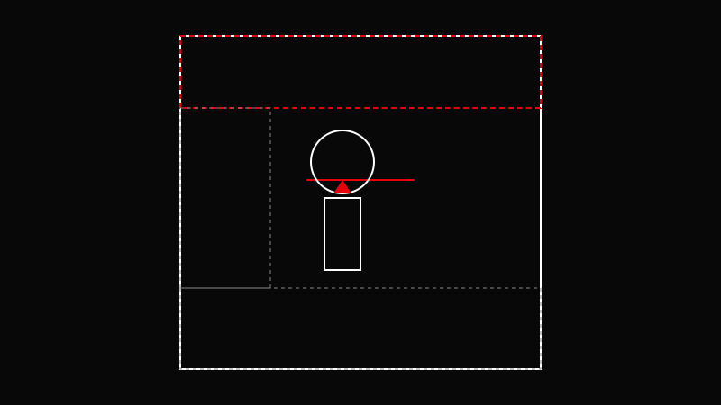

AVA CREATORS TOOLKIT · FRAMING
HEADROOM & LOOK ROOM
Give subjects space in the direction they're looking
Give subjects space in the direction they're looking

Give subjects space in the direction they're looking.
Place eyes on the upper third.
Leave space in front of the face.
Adjust headroom based on emotion.
Reframe after movement.
Less nose room creates tension—use intentionally.
Centering the head vertically.